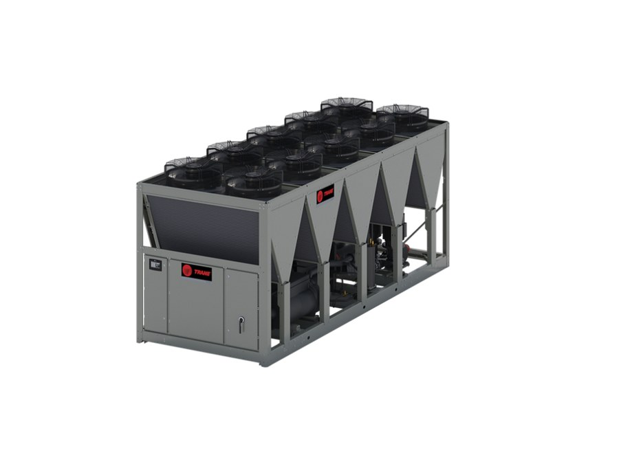
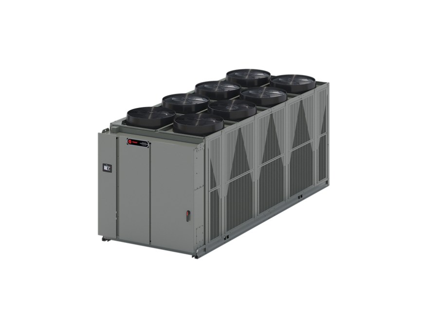

Un chiller enfría líquido para procesos que no admiten interrupciones. Somos distribuidor autorizado Trane en Ecuador: seleccionamos el equipo según la carga real, lo instalamos, lo ponemos en marcha y lo mantenemos, con repuesto original y taller propio en Quito.
🧮 Calculadora
Encuentre su modelo
Ingrese la capacidad que necesita: le decimos qué serie y qué modelo la cubre, entre CGAM, RTAC y CenTraVac.
Escoja el modelo de su chiller
CGAMChiller condensado por aire, 55 a 460 kW
- CompresorTornillo semihermético, baja velocidad, 4 piezas móviles
- EvaporadorPelícula húmeda por difusión: mayor COP, menos carga de refrigerante
- Instalación1,2 m de espacio lateral para mantenimiento
- Uso típicoClimatización de edificios y procesos de capacidad media
- Documentación

| Modelo | Pot. frigorífica (kW) | Pot. eléctrica (kW) | Dimensiones (mm) | Peso (kg) |
|---|
RTACChiller de tornillo condensado por aire, gran capacidad
- CompresorTornillo helicoidal Series R, accionamiento directo
- RefrigeranteR-134a, de 2 a 4 compresores según el tamaño
- AmbienteOpera de -18 °C a 46 °C; con opción hasta 51 °C
- Uso típicoProcesos de operación continua todo el año
- Documentación

| Modelo | Capacidad (TR) | Capacidad (kW) | Pot. eléctrica (kW) | EER | Peso en op. (kg) |
|---|
CenTraVacChiller centrífugo condensado por agua, gran tonelaje
- CompresorCentrífugo, un solo eje sobre cojinetes tipo turbina
- RefrigeranteR-123 de baja presión: si hay fuga, entra aire, no sale gas
- En Ecuador60 Hz → series CVHE, CVHS, CVHF y CDHF
- Uso típicoEdificios grandes, centros de datos, plantas industriales
- Documentación

| Serie | Capacidad (TR) | Capacidad (kW) | Frecuencia | Diseño |
|---|
Cómo seleccionamos el equipo
La capacidad de catálogo se mide en condiciones nominales que casi nunca coinciden con la instalación real. En Ecuador entra además un factor que muchos cálculos ignoran: la altitud. A 2.500 metros el aire pesa un cuarto menos, y eso cambia el desempeño de un condensador enfriado por aire.
Por eso no cotizamos por tabla. Calculamos la carga con las condiciones del sitio —altitud, temperatura de diseño, humedad— y recién entonces proponemos modelo.
¿Necesita asesoría para su proyecto? Cuéntenos qué proceso debe enfriar, con qué caudal y a qué temperatura, y le proponemos el equipo con la memoria de cálculo. Respondemos en menos de 24 horas.
Repuestos y servicio
Mantenemos repuesto original Trane y hacemos mantenimiento preventivo y correctivo con cobertura nacional. La reparación de compresores se realiza en nuestro taller de Quito.